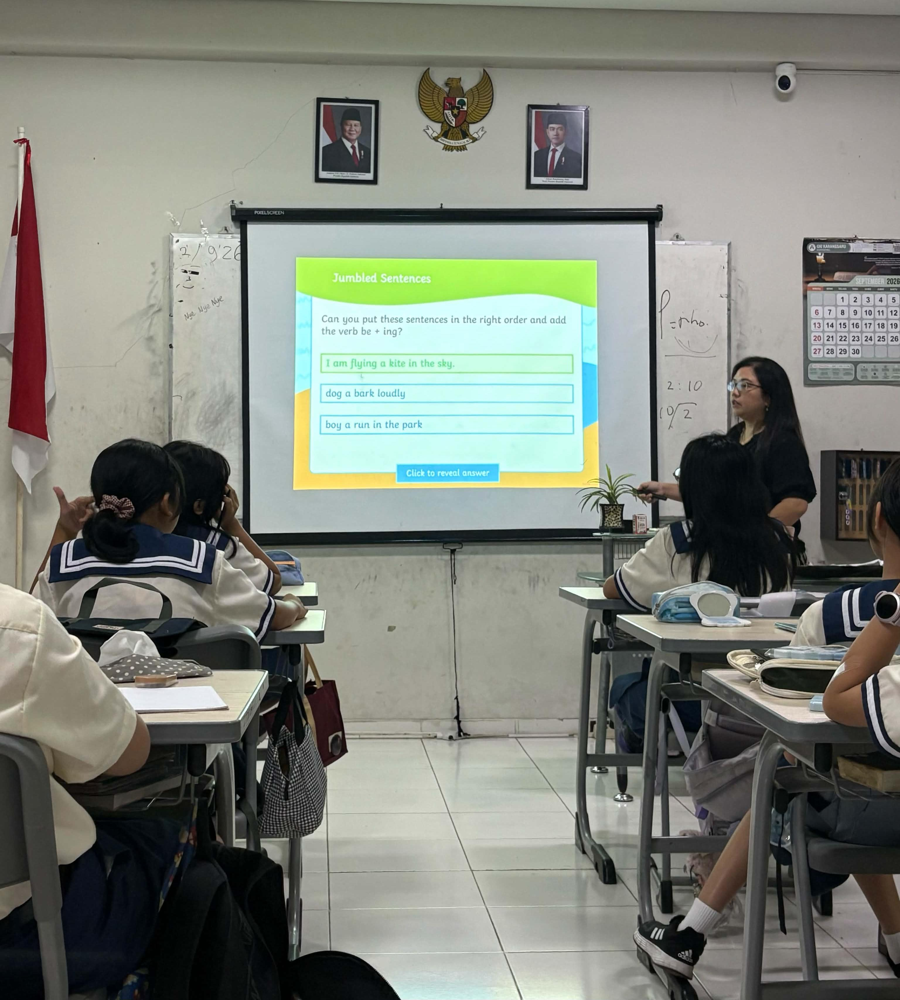
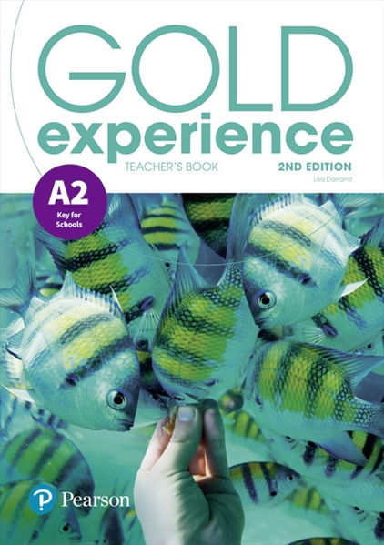
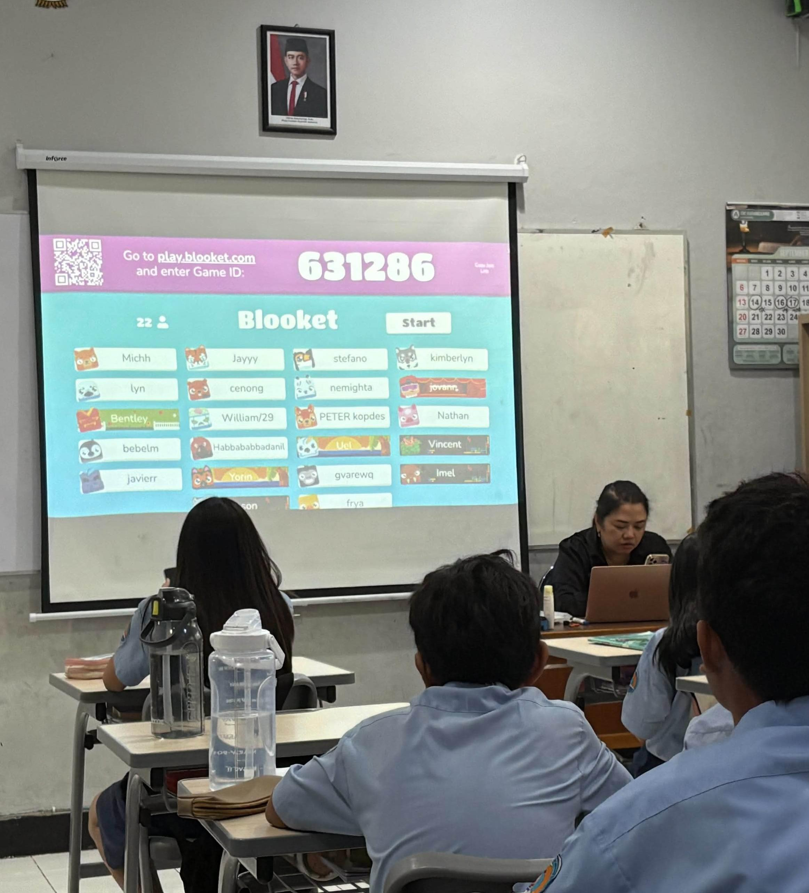
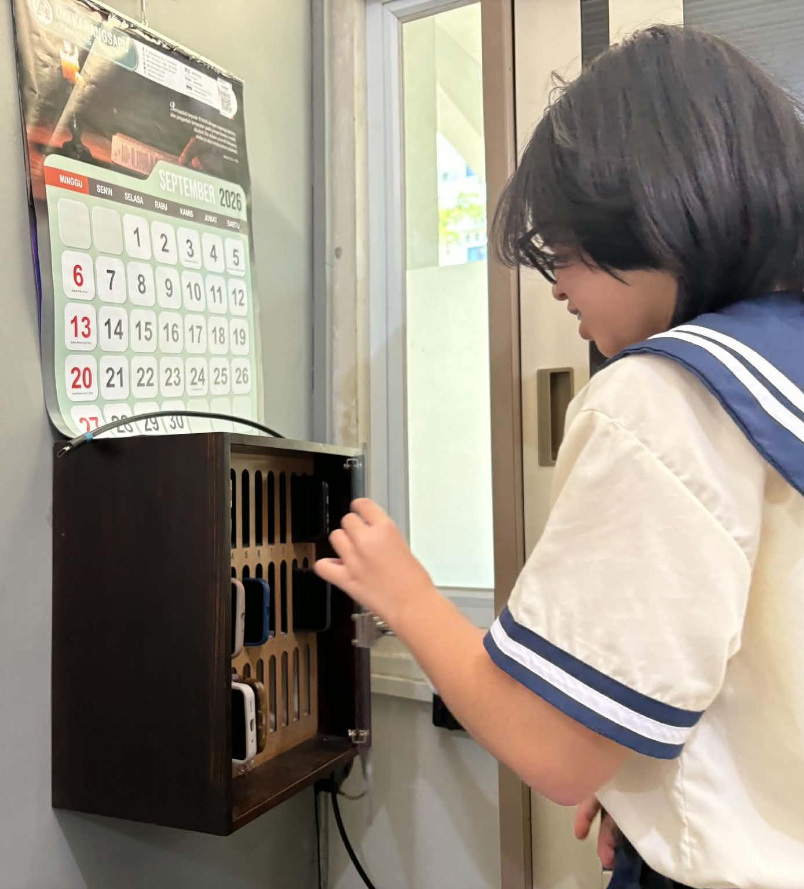

Teaching Strategies and Methods
Ms. Enik combines direct instruction with interactive and collaborative learning activities. She often begins lessons with a review of previous topics before introducing new concepts through discussion and guided practice. Activities such as Sentence Doctor, Jumbled Sentences, Picture Description, Fill in the Blanks, and group discussions encourage students to actively participate in the learning process. Students are also given opportunities to work together, share ideas, and present their outputs, helping them develop confidence and communication skills.
Learning Materials and Instructional Practices
Lessons are primarily supported by the Gold Experience textbook by Pearson, which serves as the main learning resource. However, the teacher also supplements the textbook with self-developed activities and exercises tailored to students' needs. These activities provide opportunities for students to apply concepts beyond textbook exercises and engage in meaningful learning experiences.


Learning Resources and Educational Technology
Technology plays an important role in the teaching-learning process at YSKI. Classrooms are equipped with modern facilities, including smart LCD projectors and speaker systems. The school also utilizes the SISKY Learning Management System (LMS) for monitoring student attendance, progress, and schedules. Interactive platforms such as Blooket are integrated into lessons to increase student engagement and participation through game-based learning.
Classroom Management Practices
Effective classroom management was one of the key practices I observed. Students place their mobile phones in a locked glass box before lessons begin to minimize distractions. The teacher uses simple verbal cues such as "Is this the time to talk?" to regain students' attention and maintain classroom discipline. I also observed that management practices vary depending on the class profile. Smart classes tend to be quieter and more focused, while regular classes are more expressive and require more active classroom control strategies.

Assessment and Student Participation
Assessment at YSKI extends beyond written examinations. Students are evaluated through oral responses, group discussions, classroom participation, presentations, performances and interactive activities. The teacher frequently recognizes students who contribute ideas and actively participate, encouraging confidence and engagement in the learning process. This approach highlights the importance of assessment as a tool for both measuring learning and motivating student participation.